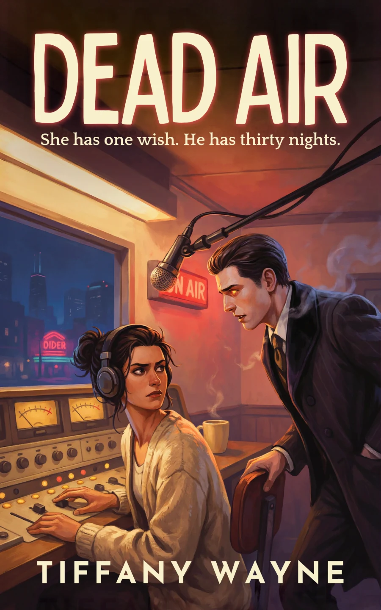
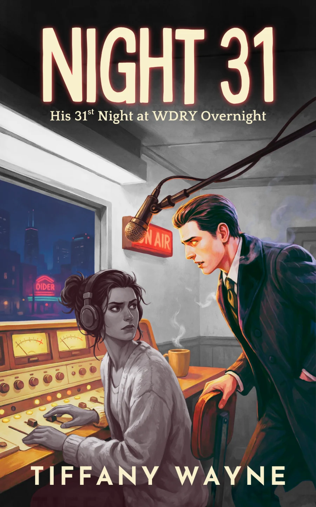

BOOK 2
Tagged Male
Outlined · Drafting
She’s scheduled to neuter him Monday. The full moon is Sunday.
Meet the next coupleDead Air · Available for preorder
A graveyard-shift radio host. A demon who can’t lie. Thirty nights to make a wish neither of them can afford.
Meet Margo and Dennis in Dead Air, the first standalone paranormal romantic comedy in After Dark in Chicago.

After Dark in Chicago · Book 1
Dead AirTiffany Wayne
After Dark in Chicago
New couples. Standalone stories. Guaranteed happily ever afters. Dry, dark humor, slow-burn chemistry, and warm fade-to-black heat.
BOOK 2
Outlined · Drafting
She’s scheduled to neuter him Monday. The full moon is Sunday.
Meet the next coupleBOOK 3
Planned · Outlined
Every time she falls a little harder, Chicago gets another six inches of snow.
Meet the next coupleBOOK 4
In planning
Chicago’s undead have a standing appointment. Their new embalmer has questions.
Meet the next couple
An After Dark bonus scene
Night 31Tiffany Wayne
After Dark · The newsletter
Join Tiffany Wayne’s After Dark newsletter for book news and your free bonus scene, Night 31.